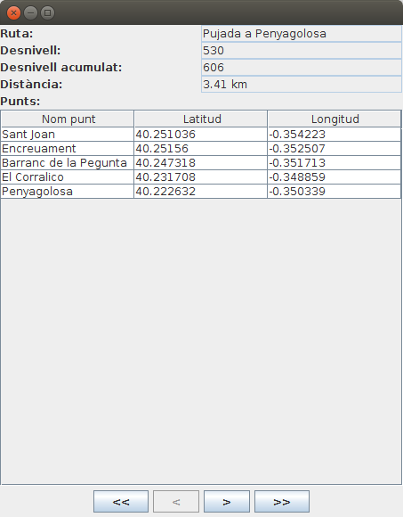
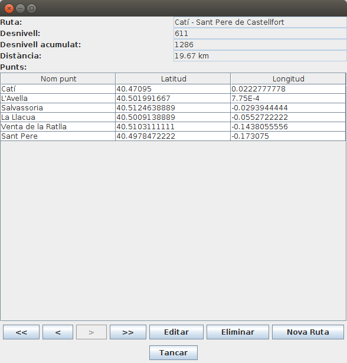
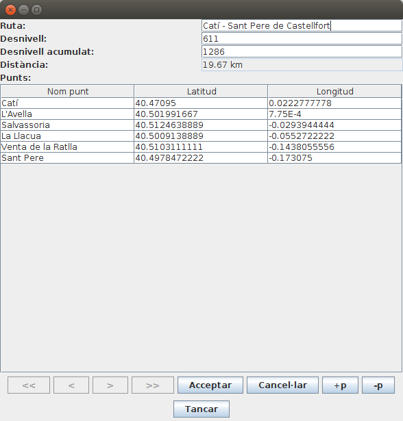
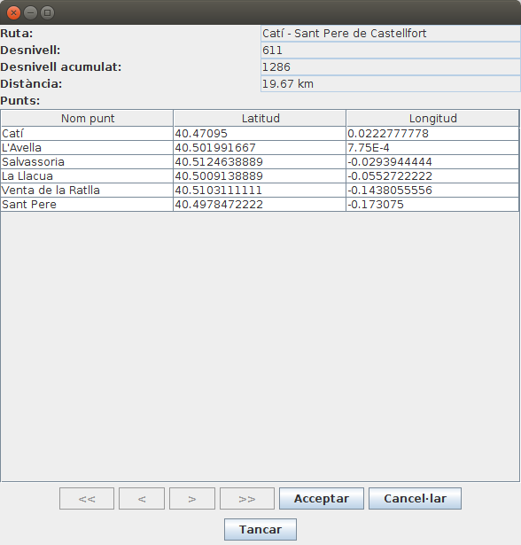
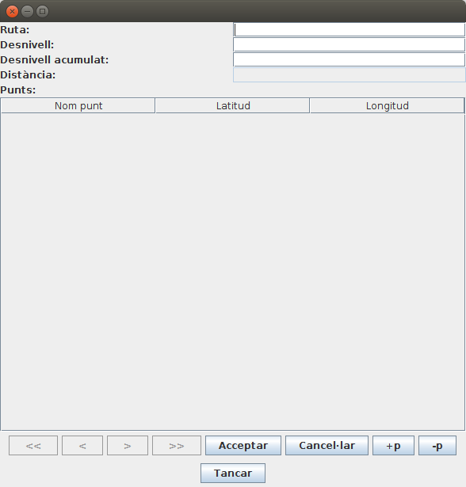

Exercicis
Exercici 6.1 (BDOR) (voluntari)
Des de la perspectiva Database Development d'Eclipse, o des de PgAdmin si el tens instal·lat, entrant com a usuari rxx en la Base de Dades rxx:
- Crea un tipus de dades anomenat coordenades, amb dos camps: lat (numèric) i lon (numèric).
- Crea un tipus de dades anomenat punt, amb tres camps; num_p (enter), nom_p (text) i coord (de tipus coordenades)
- Crea un taula anomenada ruta amb la seguent estructura: num_r (enter, clau principal), nom_r (text), desn (enter), desn_acum (enter), llista_punts (array de punt)
Exercici 6.2 (BDOR) (voluntari)
Crea un nou paquet anomenat Exercicis en el projecte Tema6_1. Inclou en el projecte les llibreries de JDBC per a PostgreSQL i per a SQLite, si no ho estan encara.
- Copia el paquet util.bd al projecte. Aquest paquet el vam fer en l'exercici Ex 4.4 i inclou les classes Coordenades.java, PuntGeo.java i Ruta.java. També inclou la classe GestionarRutesBD.java, que ens permetia gestionar la BD Rutes.sqlite
- Copia també la BD Rutes.sqlite, creada en exercicis anteriors, però que l'última actualització és del mateix exercici.
A partir d'aci comença realment l'exercici, que consistirà en passar les dades des de Rutes.sqlite fins la Base de Dades de PostgreSQL rxx, creada en l'exercici anterior, i posteriorment visualitzar-les, però de forma còmoda
- Crea la classe PassarRutaSqlitePostgresql.java, amb main() (és a dir, executable).
- Heu d'agafar totes les rutes de Rutes.sqlite i deixar-les en un ArrayList de Ruta amb el mètode ja creat de GestionarRutesBD.java anomenat llistat().
- Utilitzeu el mètode cadenaRuta(ruta) que us passarà el professor que torna una cadena de text amb totes les dades de la ruta, que es pot utilitzar en un INSERT (per exemple el podeu col·locar en la mateixa classe PassarRutaSQLitePostgresql). Us recomane vivament que primer tragueu per pantalla la sentència INSERT abans d'executar-la. Observeu que cadenaRuta() no torna el número de la ruta.
- Inseriu totes les rutes en la BD de PostgreSQL rxx.
- Crea la classe VisRutaPostgreSQL, amb main() (és a dir, executable) que visualitze les rutes amb el següent format. Observa que sí que agafem element a element de la llista de punts, però després no intentem separar el contingut ni dels elements de tipus punt, ni molt menys dels de tipus coordenades.
Ruta número 1: Pujada a Penyagolosa
Punts:
(1,"Sant Joan","(40.251036,-0.354223)")
(2,Encreuament,"(40.25156,-0.352507)")
(3,"Barranc de la Pegunta","(40.247318,-0.351713)")
(4,"El Corralico","(40.231708,-0.348859)")
(5,Penyagolosa,"(40.222632,-0.350339)")
Exercici 6.3 (BDOO)
Crea un nou paquet anomenat exercicis en el projecte Tema6. Incorpora en el projecte el driver per a DB4O , sino el tenies incorporat.
- Copia el paquet util.bd al projecte. Aquest paquet el vam fer en l'exercici T4Ex4 i inclou les classes Coordenades.kt, PuntGeo.kt i Ruta.kt. També inclou la classe GestionarRutesBD.java, que ens permetia gestionar la BD Rutes.sqlite
- Copia també la BD Rutes.sqlite, creada en exercicis anteriors, però que l'última actualització és del mateix exercici.
- Incorpora el driver de SQLite
- Hem de canviar la definició de les propietats de la classe Ruta, ja que ara hem de permetre valors nuls per a poder fer consultes pel mètode queryByExample(). La manera més senzilla segurament serà:
class Ruta (var nom: String?, var desnivell: Int?, var desnivellAcumulat: Int?, var llistaDePunts: MutableList<PuntGeo> = mutableListOf<PuntGeo>()): Serializable - D'aquesta manera, per a crar un objecte Ruta que estiga totalment buit, ho faríem així: Ruta(null,null,null)
- Podria ser que aquest canvi en la definició de les propietat de Ruta provoque algun error en GestionarRutesBD. Si és així corregeix-los
A partir d'aci comença realment l'exercici, que consistirà en passar les dades des de Rutes.sqlite fins la Base de Dades de DB4O Rutes.db4o.
- Crea't el programa Ex3_PassarRutaSqliteDB4O.kt.
- Has d'agafar totes les rutes de Rutes.sqlite i deixar-les en un ArrayList de Ruta amb el mètode ja creat de GestionarRutesBD.java anomenat llistat().
- Insereix totes les rutes en la BD Rutes.db4o.
- Tanca la connexió.
- Crea la classe Ex3_VisRutaDB4O.kt, que ha de connectar a la Base de Dades Rutes.db4o , ha de llegir totes les rutes (ves amb compte, perquè només has de llegir rutes; s'han guardat més objectes: punts i coordenades) i ha de traure per pantalla el nom de la ruta i el número de punts.

Exercici 6.4 (BDOO)
En el mateix projecte i paquet anem a fer una aplicació amb interfície gràfica, com en un exercici voluntari del Tema 4, però ara atancant a DB4O.
El programa mostrarà una ruta, i hi haurà també uns botons per anar a la primera, anterior, següent i última ruta. Hi ha també el botó de Tancar, que tancarà la connexió amb la Base de Dades i eixirà del programa.
Per a omplir el JTable amb els punts, teniu un mètode que ho fa automàticament: plenarTaula(). Observeu quin és el seu paràmetre.
De moment tindrà aquest aspecte:

en el qual, a banda de les etiquetes (JLabel) i quadres de text (JTextField) tenim una taula (JTable) on col·locarem tots els punts de la ruta (nom, latitud i longitud). Tots els controls són no editables, per a no poder introduir cap informació.
Aquest seria l'esquelet del programa.
Copieu-lo en un fitxer Kotlin anomenat Ex4_VisRutes_DB4O.kt , i poseu les sentències necessàries després dels comentaris:
import java.awt.EventQueue
import java.awt.GridLayout
import java.awt.FlowLayout
import javax.swing.JFrame
import javax.swing.JPanel
import javax.swing.BoxLayout
import javax.swing.JComboBox
import javax.swing.JButton
import javax.swing.JTextArea
import javax.swing.JLabel
import javax.swing.JTextField
import javax.swing.JTable
import javax.swing.JScrollPane
import util.bd.Ruta
import util.bd.PuntGeo
import com.db4o.Db4oEmbedded
class FinestraComplet : JFrame() {
var llista = arrayListOf<Ruta>()
var numActual = 0
// Declaració de la Base de Dades
val qNom = JTextField(15)
val qDesn = JTextField(5)
val qDesnAcum = JTextField(5)
val punts = JTable(1, 3)
val primer = JButton(" << ")
val anterior = JButton(" < ")
val seguent = JButton(" > ")
val ultim = JButton(" >> ")
val tancar = JButton("Tancar")
init {
defaultCloseOperation = JFrame.EXIT_ON_CLOSE
setTitle("JDBC: Visualitzar Rutes Complet")
setLayout(GridLayout(0, 1))
val p_prin = JPanel()
p_prin.setLayout(BoxLayout(p_prin, BoxLayout.Y_AXIS))
val panell1 = JPanel(GridLayout(0, 2))
panell1.add(JLabel("Ruta:"))
qNom.setEditable(false)
panell1.add(qNom)
panell1.add(JLabel("Desnivell:"))
qDesn.setEditable(false)
panell1.add(qDesn)
panell1.add(JLabel("Desnivell acumulat:"))
qDesnAcum.setEditable(false)
panell1.add(qDesnAcum)
panell1.add(JLabel("Punts:"))
val panell2 = JPanel(GridLayout(0, 1))
punts.setEnabled(false)
val scroll = JScrollPane(punts)
panell2.add(scroll, null)
val panell5 = JPanel(FlowLayout())
panell5.add(primer)
panell5.add(anterior)
panell5.add(seguent)
panell5.add(ultim)
val panell6 = JPanel(FlowLayout())
panell6.add(tancar)
add(p_prin)
p_prin.add(panell1)
p_prin.add(panell2)
p_prin.add(panell5)
p_prin.add(panell6)
pack()
primer.addActionListener {
// instruccions per a situar-se en la primera ruta, i visualitzar-la
}
anterior.addActionListener {
// instruccions per a situar-se en la ruta anterior, i visualitzar-la
}
seguent.addActionListener {
// instruccions per a situar-se en la ruta següent, i visualitzar-la
}
ultim.addActionListener {
// instruccions per a situar-se en l'últim ruta, i visualitzar-la
}
tancar.addActionListener {
// instruccions per a tancar la BD i el programa
}
inicialitzar()
VisRuta()
}
fun plenarTaula(ll_punts: MutableList<PuntGeo>) {
var ll = Array(ll_punts.size) { arrayOfNulls<String>(3) }
for (i in 0 until ll_punts.size) {
ll[i][0] = ll_punts.get(i).nom
ll[i][1] = ll_punts.get(i).coord.latitud.toString()
ll[i][2] = ll_punts.get(i).coord.longitud.toString()
}
val caps = arrayOf("Nom punt", "Latitud", "Longitud")
punts.setModel(javax.swing.table.DefaultTableModel(ll, caps))
}
fun inicialitzar() {
// instruccions per a inicialitzar llista i numActual
}
fun VisRuta() {
// instruccions per a visualitzar la ruta actual (l'índex el tenim en numActual
ActivarBotons()
}
fun ActivarBotons() {
// instruccions per a activar o desactivar els botons de moviment ( setEnabled(Boolean) )
}
}
fun main(args: Array<String>) {
EventQueue.invokeLater {
FinestraComplet().isVisible = true
}
}Exercici 6.5 (BDOO)
Modificar la classe anterior per a incorporar també la distància total de la ruta. Per a poder calcular-la ens ajudarem de la següent funció que calcula la distància en quilòmetres entre dos punts, donant les coordenades (latitud i longitud) dels dos punts: Dist(lat1,long1,lat2,long2). Observeu que per a calcular la distància de forma correcta hem de tenir en compte tots els punts (si només tenim en compte el primer punt i l'últim, la distància d'una ruta circular seria 0).
Podeu incorporar-la a la classe on esteu fent l'exercici (Ex4_VisRutes_DB4O.kt).
fun Dist(lat1: Double, lon1: Double, lat2: Double, lon2: Double): Double {
val R = 6378.137 // Radi de la Tierra en km
val dLat = rad(lat2 - lat1)
val dLong = rad(lon2 - lon1)
val a = Math.sin(dLat / 2) * Math.sin(dLat / 2) + Math.cos(rad(lat1)) * Math.cos(rad(lat2)) * Math.sin(dLong / 2) * Math.sin(dLong / 2)
val c = 2 * Math.atan2(Math.sqrt(a), Math.sqrt(1 - a))
val d = R * c
return Math.round(d*100.0)/100.0
}
fun rad(x: Double): Double {
return x * Math.PI / 180
}Aquest seria un exemple:

Exercici 6.6 (ampliació - voluntari)
Modifica l'aplicació anterior per a que es puguen modificar, esborrar i inserir les rutes.

- S'haurien de posar més botons: Editar, Eliminar i Nova Ruta.
- Estaria bé que en entrar a qualsevol de les opcions anteriors es desactivaren els botons de navegació, que desaparegueren els d'Editar, Eliminar i Nova Ruta, i que aparegueren els d'Acceptar i Cancel·lar.
- En tots els casos, si es cancel·la no es fa cap acció, però s'ha de tornar a l'estat anterior (primera imatge)
- EDITAR:
- S'han d'"activar" els controls per a poder modificar les dades.
- En cas d'acceptar s'ha de fer la modificació a partir del contingut de tots els controls (no cal detectar quins s'han modificat)
- En cas de cancel·lar, no es fa la modificació, i senzillament s'ha de tornar a visualitzar la ruta actual (com no s'ha fet cap canvi, apareixeran les dades anteriors)
- Per a afegir nous punts, es podria posar un botó per a afegir una nova línia al JTable, i un altre per a llevar una línia

- ELIMINAR:
- Si s'accepta, s'haurà d'esborrar la ruta, sinó tornar a visualitzar-la

- INSERIR:
- Haurà de mostrar tots els camps en blanc, i evidentment activats, per a poder introduir dades.
- En cas d'acceptar s'ha d'introduir la nova ruta.
- En cas de cancel·lar, estaria bé tornar a la que s'estava mostrant abans d'apretar el botó de nova ruta.
- Per a introduir nous punts, es podria posar un botó per a afegir una nova línia al JTable, i un altre per a llevar una línia

Nota
EL JTable de vegades és engorrós. Si s'està editant una casella, la informació no s'ha introduït encara, fins que no s'aprete enter, tab o amb el ratolí no s'aprete a algun altre lloc.Per a acabar la introducció de la informació que s'està editant, es podria executar el següent (per exemple quan s'ha apretat Acceptar):
if (punts.isEditing())
punts.getCellEditor().stopCellEditing()
on punts seria al JTable.
A continuació teniu l'esquelet del programa. Hi ha uns quants mètodes per a fer més sezilla la implementació, però ho podeu fer a la vostra manera. Copieu el següent codi a un fitxer anomenat Ex6_6_VisRutes_DB4O_Avancat.kt:
import java.awt.EventQueue
import java.awt.GridLayout
import java.awt.FlowLayout
import javax.swing.JFrame
import javax.swing.JPanel
import javax.swing.BoxLayout
import javax.swing.JComboBox
import javax.swing.JButton
import javax.swing.JTextArea
import javax.swing.JLabel
import javax.swing.JTextField
import javax.swing.JTable
import javax.swing.JScrollPane
import javax.swing.table.DefaultTableModel
import utilBd.Ruta
import utilBd.PuntGeo
import utilBd.Coordenades
import com.db4o.Db4oEmbedded
import com.db4o.EmbeddedObjectContainer
class FinestraAvancat : JFrame() {
var llista = arrayListOf<Ruta>()
var numActual = 0
// Declaració de la Base de Dades amb lateinit, per a inicialitzar després
var actualitzant = false
var modificacio = ""
val qNom = JTextField(15)
val qDesn = JTextField(5)
val qDesnAcum = JTextField(5)
val qDistancia = JTextField(5)
val punts = JTable(1, 3)
val primer = JButton(" << ")
val anterior = JButton(" < ")
val seguent = JButton(" > ")
val ultim = JButton(" >> ")
val tancar = JButton("Tancar")
val editar = JButton("Editar")
val eliminar = JButton("Eliminar")
val nova = JButton("Nova Ruta")
val acceptar = JButton("Acceptar")
val cancelar = JButton("Cancel·lar")
val mesP = JButton("+p")
val menysP = JButton("-p")
init {
defaultCloseOperation = JFrame.EXIT_ON_CLOSE
setTitle("JDBC: Visualitzar Rutes Complet")
setLayout(GridLayout(0, 1))
// Inicialització de la BD, amb opcions de modificar i esborrar en cascada
val p_prin = JPanel()
p_prin.setLayout(BoxLayout(p_prin, BoxLayout.Y_AXIS))
val panell1 = JPanel(GridLayout(0, 2))
panell1.add(JLabel("Ruta:"))
qNom.setEditable(false)
panell1.add(qNom)
panell1.add(JLabel("Desnivell:"))
qDesn.setEditable(false)
panell1.add(qDesn)
panell1.add(JLabel("Desnivell acumulat:"))
qDesnAcum.setEditable(false)
panell1.add(qDesnAcum)
panell1.add(JLabel("Distància:"))
qDistancia.setEditable(false)
panell1.add(qDistancia)
panell1.add(JLabel("Punts:"))
val panell2 = JPanel(GridLayout(0, 1))
punts.setEnabled(false)
val scroll = JScrollPane(punts)
panell2.add(scroll, null)
val panell5 = JPanel(FlowLayout())
panell5.add(primer)
panell5.add(anterior)
panell5.add(seguent)
panell5.add(ultim)
panell5.add(editar)
panell5.add(eliminar)
panell5.add(nova)
acceptar.setVisible(false)
panell5.add(acceptar)
cancelar.setVisible(false)
panell5.add(cancelar)
mesP.setVisible(false)
panell5.add(mesP)
menysP.setVisible(false)
panell5.add(menysP)
val panell6 = JPanel(FlowLayout())
panell6.add(tancar)
add(p_prin)
p_prin.add(panell1)
p_prin.add(panell2)
p_prin.add(panell5)
p_prin.add(panell6)
ActivarAltres(true)
pack()
ActivarAltres(false)
primer.addActionListener {
// instruccions per a situar-se en la primera ruta, i visualitzar-la
}
anterior.addActionListener {
// instruccions per a situar-se en la ruta anterior, i visualitzar-la
}
seguent.addActionListener {
// instruccions per a situar-se en la ruta següent, i visualitzar-la
}
ultim.addActionListener {
// instruccions per a situar-se en l'últim ruta, i visualitzar-la
}
tancar.addActionListener {
// instruccions per tancar la BD i eixir del programa
}
editar.addActionListener {
// instruccions per a editar la ruta que s'està veient en aquest moment
// s'han d'activar els quadres de text, i el JTable
}
eliminar.addActionListener {
// instruccions per a eliminar la ruta que s'està veient en aquest moment
}
nova.addActionListener {
// instruccions per a posar en blanc els quadres de texti el JTable, per a inserir una nova ruta
// s'han d'activar els quadres de text, i el JTable
}
acceptar.addActionListener {
// instruccions per a acceptar l'acció que s'està fent (nova ruta, edició o eliminació)
}
cancelar.addActionListener {
// instruccions per a cancel·lar l'acció que s'estava fent
}
mesP.addActionListener {
// instruccions per a afegir una línia en el JTable
}
menysP.addActionListener {
// instruccions per a llevar una línia del JTable
}
inicialitzar()
VisRuta()
}
fun plenarTaula(ll_punts: MutableList<PuntGeo>) {
var ll = Array(ll_punts.size) { arrayOfNulls<String>(3) }
for (i in 0 until ll_punts.size) {
ll[i][0] = ll_punts.get(i).nom
ll[i][1] = ll_punts.get(i).coord.latitud.toString()
ll[i][2] = ll_punts.get(i).coord.longitud.toString()
}
val caps = arrayOf("Nom punt", "Latitud", "Longitud")
punts.setModel(javax.swing.table.DefaultTableModel(ll, caps))
}
fun inicialitzar() {
// instruccions per a inicialitzar llistat i numActual
}
fun VisRuta() {
// instruccions per a visualitzar la ruta actual (l'índex el tenim en numActual)
ActivarBotons()
}
fun ActivarBotons() {
// instruccions per a activar o desactivar els botons de moviment ( setEnabled(Boolean) )
}
fun ActivarAltres(b: Boolean) {
// instruccions per a mostrar els botons acceptar, cancelar, mesP, menysP,
// ocultar editar, eliminar, nova. O al revés
// i descativar els de moviment
}
fun ActivarQuadres(b: Boolean) {
// instruccions per activar (o desactivar) els quadres de text i el JTable
}
fun PosarQuadresBlanc() {
//instruccions per a posar en blanc els quadres de text i el JTable quan anem a una nova ruta
}
fun AssignaRuta(r: Ruta) {
// instruccions per a guardar en el paràmetre r el valor dels quadres de text i JTable
}
fun agafarRutes(): ArrayList<Ruta> {
// instruccions per a tornar totes les rutes de la Base de Dades
}
fun Dist(lat1: Double, lon1: Double, lat2: Double, lon2: Double): Double {
val R = 6378.137 // Radi de la Tierra en km
val dLat = rad(lat2 - lat1)
val dLong = rad(lon2 - lon1)
val a =
Math.sin(dLat / 2) * Math.sin(dLat / 2) + Math.cos(rad(lat1)) * Math.cos(rad(lat2)) * Math.sin(dLong / 2) * Math.sin(
dLong / 2
)
val c = 2 * Math.atan2(Math.sqrt(a), Math.sqrt(1 - a))
val d = R * c
return Math.round(d * 100.0) / 100.0
}
fun rad(x: Double): Double {
return x * Math.PI / 180
}
}
fun main(args: Array<String>) {
EventQueue.invokeLater {
FinestraAvancat().isVisible = true
}
}Llicenciat sota la Llicència Creative Commons Reconeixement NoComercial CompartirIgual 2.5